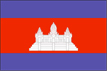

{kind=link}


![[Country map of Cambodia]](../maps/cb-map.jpg)
| Cambodia |  |
|
| | |
| Introduction |
Background: Following a five-year struggle, communist Khmer Rouge forces captured Phnom Penh in 1975 and ordered the evacuation of all cities and towns; over 1 million displaced people died from execution or enforced hardships. A 1978 Vietnamese invasion drove the Khmer Rouge into the countryside and touched off 13 years of fighting. UN-sponsored elections in 1993 helped restore some semblance of normalcy, as did the rapid diminishment of the Khmer Rouge in the mid-1990s. A coalition government, formed after national elections in 1998, brought renewed political stability and the surrender of remaining Khmer Rouge forces.
| Geography |
Location: Southeastern Asia, bordering the Gulf of Thailand, between Thailand, Vietnam, and Laos
Geographic coordinates: 13 00 N, 105 00 E
Map references: Southeast Asia
Area:
total:
181,040 sq km
land:
176,520 sq km
water:
4,520 sq km
Area - comparative: slightly smaller than Oklahoma
Land boundaries:
total:
2,572 km
border countries:
Laos 541 km, Thailand 803 km, Vietnam 1,228 km
Coastline: 443 km
Maritime claims:
contiguous zone:
24 nm
continental shelf:
200 nm
exclusive economic zone:
200 nm
territorial sea:
12 nm
Climate: tropical; rainy, monsoon season (May to November); dry season (December to April); little seasonal temperature variation
Terrain: mostly low, flat plains; mountains in southwest and north
Elevation extremes:
lowest point:
Gulf of Thailand 0 m
highest point:
Phnum Aoral 1,810 m
Natural resources: timber, gemstones, some iron ore, manganese, phosphates, hydropower potential
Land use:
arable land:
13%
permanent crops:
0%
permanent pastures:
11%
forests and woodland:
66%
other:
10% (1993 est.)
Irrigated land: 920 sq km (1993 est.)
Natural hazards: monsoonal rains (June to November); flooding; occasional droughts
Environment - current issues: illegal logging activities throughout the country and strip mining for gems in the western region along the border with Thailand have resulted in habitat loss and declining biodiversity (in particular, destruction of mangrove swamps threatens natural fisheries); soil erosion; in rural areas, a majority of the population does not have access to potable water; toxic waste delivery from Taiwan sparked unrest in Kampong Saom (Sihanoukville) in December 1998
Environment - international agreements:
party to:
Biodiversity, Climate Change, Desertification, Endangered Species, Marine Life Conservation, Ship Pollution, Tropical Timber 94, Wetlands
signed, but not ratified:
Law of the Sea, Marine Dumping
Geography - note: a land of paddies and forests dominated by the Mekong River and Tonle Sap
| People |
Population:
12,212,306
note:
estimates for this country explicitly take into account the effects of excess mortality due to AIDS; this can result in lower life expectancy, higher infant mortality and death rates, lower population and growth rates, and changes in the distribution of population by age and sex than would otherwise be expected (July 2000 est.)
Age structure:
0-14 years:
42% (male 2,610,009; female 2,505,932)
15-64 years:
55% (male 3,132,198; female 3,542,655)
65 years and over:
3% (male 173,179; female 248,333) (2000 est.)
Population growth rate: 2.27% (2000 est.)
Birth rate: 33.48 births/1,000 population (2000 est.)
Death rate: 10.79 deaths/1,000 population (2000 est.)
Net migration rate: 0 migrant(s)/1,000 population (2000 est.)
Sex ratio:
at birth:
1.05 male(s)/female
under 15 years:
1.04 male(s)/female
15-64 years:
0.88 male(s)/female
65 years and over:
0.7 male(s)/female
total population:
0.94 male(s)/female (2000 est.)
Infant mortality rate: 66.82 deaths/1,000 live births (2000 est.)
Life expectancy at birth:
total population:
56.53 years
male:
54.44 years
female:
58.74 years (2000 est.)
Total fertility rate: 4.82 children born/woman (2000 est.)
Nationality:
noun:
Cambodian(s)
adjective:
Cambodian
Ethnic groups: Khmer 90%, Vietnamese 5%, Chinese 1%, other 4%
Religions: Theravada Buddhist 95%, other 5%
Languages: Khmer (official) 95%, French, English
Literacy:
definition:
age 15 and over can read and write
total population:
35%
male:
48%
female:
22% (1990 est.)
| Government |
Country name:
conventional long form:
Kingdom of Cambodia
conventional short form:
Cambodia
local long form:
Preahreacheanachakr Kampuchea
local short form:
Kampuchea
Data code: CB
Government type: multiparty liberal democracy under a constitutional monarchy established in September 1993
Capital: Phnom Penh
Administrative divisions:
20 provinces (khett, singular and plural) and 3 municipalities* (krong, singular and plural); Banteay Mean Cheay, Batdambang, Kampong Cham, Kampong Chhnang, Kampong Spoe, Kampong Thum, Kampot, Kandal, Kaoh Kong, Keb*, Krachen, Mondol Kiri, Otdar Mean Cheay, Phnum Penh*, Pouthisat, Preah Seihanu* (Sihanoukville), Preah Vihear, Prey Veng, Rotanah Kiri, Siem Reab, Stoeng Treng, Svay Rieng, Takev
note:
there may be a new municipality called Pailin
Independence: 9 November 1953 (from France)
National holiday: Independence Day, 9 November (1953)
Constitution: promulgated 21 September 1993
Legal system: primarily a civil law mixture of French-influenced codes from the United Nations Transitional Authority in Cambodia (UNTAC) period, royal decrees, and acts of the legislature, with influences of customary law and remnants of communist legal theory; increasing influence of common law in recent years
Suffrage: 18 years of age; universal
Executive branch:
chief of state:
King Norodom SIHANOUK (reinstated 24 September 1993)
head of government:
Prime Minister HUN SEN (since 30 November 1998)
cabinet:
Council of Ministers appointed by the monarch
elections:
none; the monarch is chosen by a Royal Throne Council; prime minister appointed by the monarch after a vote of confidence by the National Assembly
Legislative branch:
bicameral consists of the National Assembly (122 seats; members elected by popular vote to serve five-year terms) and the Senate (61 seats; two members appointed by the monarch, two elected by the National Assembly, and 57 elected by "functional constituencies"; members serve five-year terms
elections:
National Assembly - last held 26 July 1998 (next to be held NA 2003); Senate - last held 2 March 1999 (next to be held NA 2004)
election results:
National Assembly - percent of vote by party - CPP 41%, FUNCINPEC 32%, SRP 14%, other 13%; seats by party - CPP 64, FUNCINPEC 43, SRP 15; Senate - percent of vote by party - NA; seats by party - CPP 31, FUNCINPEC 21, SRP 7
Judicial branch: Supreme Council of the Magistracy, provided for in the constitution, was formed in December 1997; a Supreme Court and lower courts exercise judicial authority
Political parties and leaders: Buddhist Liberal Party or BLP [IENG MOULY]; Cambodian Pracheachon Party or Cambodian People's Party or CPP [CHEA SIM]; Khmer Citizen Party or KCP [NGUON SOEUR]; National United Front for an Independent, Neutral, Peaceful, and Cooperative Cambodia or FUNCINPEC [Prince NORODOM RANARIDDH]; Sam Rangsi Party or SRP (formerly Khmer Nation Party or KNP) [SAM RANGSI]
International organization participation: ACCT, AsDB, ASEAN, CP, ESCAP, FAO, G-77, IAEA, IBRD, ICAO, ICRM, IDA, IFAD, IFC, IFRCS, ILO, IMF, IMO, Intelsat (nonsignatory user), Interpol, IOC, ISO (subscriber), ITU, NAM, OPCW, PCA, UN, UNCTAD, UNESCO, UNIDO, UPU, WFTU, WHO, WIPO, WMO, WToO, WTrO (applicant)
Diplomatic representation in the US:
chief of mission:
Ambassador Roland ENG
chancery:
4500 16th Street NW, Washington, DC 20011
telephone:
[1] (202) 726-7742
FAX:
[1] (202) 726-8381
Diplomatic representation from the US:
chief of mission:
Ambassador Kent M. WIEDEMANN
embassy:
27 EO Street 240, Phnom Penh
mailing address:
Box P, APO AP 96546
telephone:
[855] (23) 216-436, 216-438
FAX:
[855] (23) 216-811
Flag description: three horizontal bands of blue (top), red (double width), and blue with a white three-towered temple representing Angkor Wat outlined in black in the center of the red band
| Economy |
Economy - overview: After four years of solid macroeconomic performance, Cambodia's economy slowed dramatically in 1997-98 due to the regional economic crisis, civil violence, and political infighting. Foreign investment and tourism fell off. Also, in 1998 the main harvest was hit by drought. But in 1999, the first full year of peace in 30 years, progress was made on economic reforms and growth resumed at 4%. The long-term development of the economy after decades of war remains a daunting challenge. The population lacks education and productive skills, particularly in the poverty-ridden countryside, which suffers from an almost total lack of basic infrastructure. Recurring political instability and corruption within government discourage foreign investment and delay foreign aid. On the brighter side, the government is addressing these issues with assistance from bilateral and multilateral donors. So long as political stability lasts, the Cambodian economy is likely to grow at a respectable pace.
GDP: purchasing power parity - $8.2 billion (1999 est.)
GDP - real growth rate: 4% (1999 est.)
GDP - per capita: purchasing power parity - $710 (1999 est.)
GDP - composition by sector:
agriculture:
43%
industry:
20%
services:
37% (1998 est.)
Population below poverty line: 36% (1997 est.)
Household income or consumption by percentage share:
lowest 10%:
NA%
highest 10%:
NA%
Inflation rate (consumer prices): 4.5% (1999 est.)
Labor force: 6 million (1998 est.)
Labor force - by occupation: agriculture 80% (1999 est.)
Unemployment rate: 2.8% (1999 est.)
Budget:
revenues:
$327 million
expenditures:
$393 million, including capital expenditures of $NA (1999 est.)
Industries: garments, rice milling, fishing, wood and wood products, rubber, cement, gem mining, textiles
Industrial production growth rate: NA%
Electricity - production: 210 million kWh (1998)
Electricity - production by source:
fossil fuel:
59.52%
hydro:
40.48%
nuclear:
0%
other:
0% (1998)
Electricity - consumption: 195 million kWh (1998)
Electricity - exports: 0 kWh (1998)
Electricity - imports: 0 kWh (1998)
Agriculture - products: rice, rubber, corn, vegetables
Exports: $821 million (f.o.b., 1999 est.)
Exports - commodities: timber, garments, rubber, rice, fish
Exports - partners: US, Singapore, Japan, Thailand, Hong Kong, Indonesia, Malaysia, US
Imports: $1.2 billion (f.o.b., 1999 est.)
Imports - commodities: cigarettes, gold, construction materials, petroleum products, machinery, motor vehicles
Imports - partners: Singapore, Vietnam, Japan, Australia, Hong Kong, Indonesia, Thailand
Debt - external: $829 million (1999 est.)
Economic aid - recipient: $470 million pledged in grants and concessional loans for 2000 by international donors
Currency: 1 new riel (CR) = 100 sen
Exchange rates: new riels (CR) per US$1 - 3,786.0 (January 2000), 3,807.8 (1999), 3,744.4 (1998), 2,946.3 (1997), 2,624.1 (1996), 2,450.8 (1995)
Fiscal year: calendar year
| Communications |
Telephones - main lines in use: 21,800 (mid-1998)
Telephones - mobile cellular: 34,880 (1998)
Telephone system:
adequate landline and/or cellular service in Phnom Penh and other provincial cities; rural areas have little telephone service
domestic:
NA
international:
adequate but expensive landline and cellular service available to all countries from Phnom Penh and major provincial cities; satellite earth station - 1 Intersputnik (Indian Ocean region)
Radio broadcast stations: AM 7, FM 3, shortwave 3 (1999)
Radios: 1.34 million (1997)
Television broadcast stations: 5 (1999)
Televisions: 94,000 (1997)
Internet Service Providers (ISPs): 2 (1999)
| Transportation |
Railways:
total:
603 km
narrow gauge:
603 km 1.000-m gauge
Highways:
total:
35,769 km
paved:
4,165 km
unpaved:
31,604 km (1997 est.)
Waterways: 3,700 km navigable all year to craft drawing 0.6 m or less; 282 km navigable to craft drawing 1.8 m or less
Ports and harbors: Kampong Saom (Sihanoukville), Kampot, Krong Kaoh Kong, Phnom Penh
Merchant marine:
total:
211 ships (1,000 GRT or over) totaling 953,105 GRT/1,345,766 DWT
ships by type:
bulk 20, cargo 166, combination bulk 1, container 5, livestock carrier 2, multi-functional large load carrier 1, passenger/cargo 1, petroleum tanker 2, refrigerated cargo 7, roll-on/roll-off 6 (1999 est.)
note:
a flag of convenience registry; includes ships of 8 countries: Aruba 1, Cyprus 7, Egypt 1, South Korea 1, Malta 1, Panama 1, Russia 5, Singapore 1 (1998 est.)
Airports: 19 (1999 est.)
Airports - with paved runways:
total:
6
2,438 to 3,047 m:
2
1,524 to 2,437 m:
2
914 to 1,523 m:
2 (1999 est.)
Airports - with unpaved runways:
total:
13
1,524 to 2,437 m:
2
914 to 1,523 m:
11 (1999 est.)
Heliports: 3 (1999 est.)
| Military |
Military branches:
Royal Cambodian Armed Forces (RCAF), including Army, Navy, and Air Force - created in 1993 by the merger of the Cambodian People's Armed Forces and the two noncommunist resistance armies
note:
there are also resistance forces comprised of the Khmer Rouge (also known as the National United Army or NUA) and a separate royalist resistance movement
Military manpower - military age: 18 years of age
Military manpower - availability:
males age 15-49:
2,763,568 (2000 est.)
Military manpower - fit for military service:
males age 15-49:
1,547,078 (2000 est.)
Military manpower - reaching military age annually:
males:
156,119 (2000 est.)
Military expenditures - dollar figure: $85 million (FY98)
Military expenditures - percent of GDP: 2.4% (FY98)
| Transnational Issues |
Disputes - international: offshore islands and sections of the boundary with Vietnam are in dispute; maritime boundary with Vietnam not defined; parts of border with Thailand are indefinite; maritime boundary with Thailand not clearly defined
Illicit drugs: transshipment site for Golden Triangle heroin; possible money laundering; narcotics-related corruption reportedly involving some in the government, military, and police; possible small-scale opium, heroin, and amphetamine production; large producer of cannabis for the international market